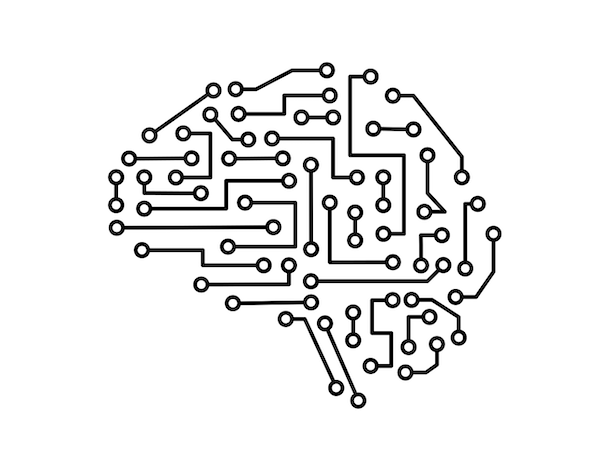

PROJECTS
Converting pcap expressions to BPF (Berkeley Packet Filters)
- Developed a compiler that translates pcap expressions into BPF, allowing for more efficient and accurate filtering of network packets- Implemented improvements relative to tcpdump's capability to capture transport layer on top of ipv6
- Designed and implemented control flow graph optimization algorithms to improve BPF's execution speed and resource utilization
- Conducted extensive testing and debugging to ensure correctness and robustness
- Contributed to the open source community, enhancing readability of 'Caper expansion' section in tcpdump.org
( https://gitlab.com/niksu/caper code is deployed online at tcpdump.org)
HULA (Hop-by-hop Utilization-aware Load balancing Architecture) Load balancer for Data Center
- Built a scalable, adaptable, and programmable congestion aware load balancer for programmable data plane using P4 language- Developed an automated tool to generate fat-tree network topologies based on specified requirements and constraints
- Conducted extensive testing and validation to ensure the accuracy and reliability of the load balancer
- Constructed an automated visualizer to capture the path of packets across the network infrastructure
Paddy Disease Classification
- Engineered a model on a large-scale dataset, achieving an accuracy of 90% using Convolutional Neural Network (CNN) with Tensorflow- Conducted thorough data analysis and data preprocessing to prepare the data for modeling
- Fine-tuned the hyperparameters to optimize model performance
